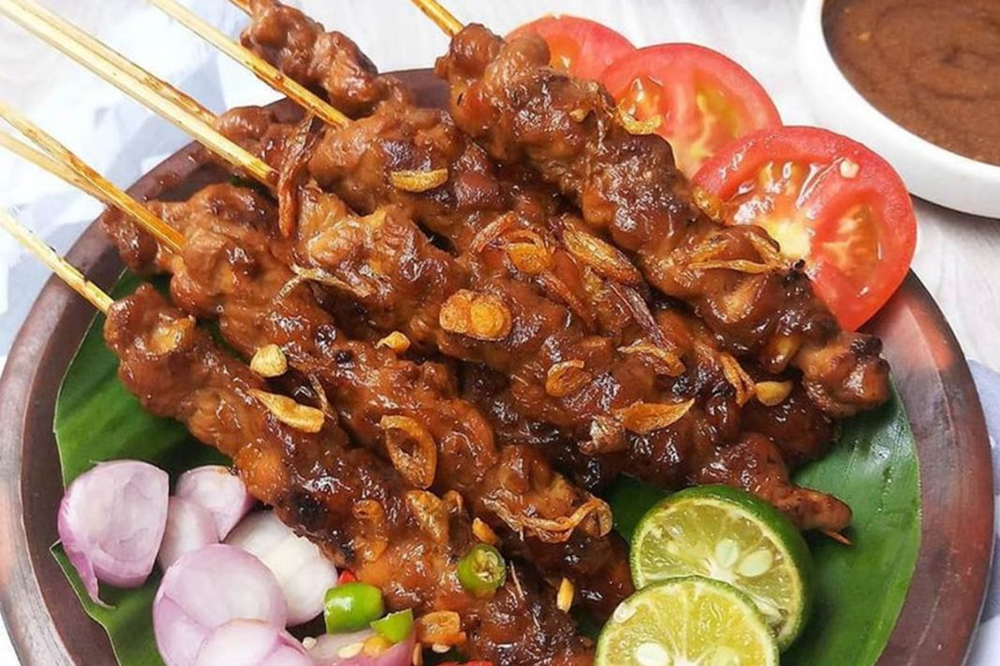

Resep Populer

Sate Ayam
Nikmati Sate Ayam dengan bumbu kacang yang menggugah selera. Resep sederhana yang bisa Anda coba di rumah.
Lihat Resep
Nasi Goreng Spesial
Nasi goreng dengan bumbu khas Indonesia yang pedas dan lezat. Cocok untuk makan siang atau malam.
Lihat Resep